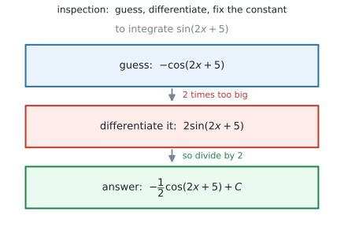
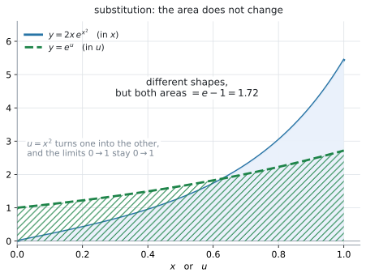

AHL 5.11b — Integration by inspection and substitution（微分の逆から予想する積分・置換積分）
- 中身が \(ax + b\) の形なら、inspection（微分の逆から予想する積分）で積分できる。
- 中身が \(ax + b\) でないときは、substitution（\(u\) を置く）で積分できる。
- \(\displaystyle\int f(g(x))\,g'(x)\,dx\) の形を見分けられる。
- \(\displaystyle\int \frac{f'(x)}{f(x)}\,dx = \ln|f(x)| + C\) の形に気づける。
- 定積分では、上端と下端も \(u\) に直せる。
- 答えを微分して、もとに戻るか確かめられる。
The idea
1. chain rule を、逆から読みます
\(\sin(2x+5)\) を積分したいとします。公式集にあるのは \(\displaystyle\int \sin x\,dx = -\cos x + C\) だけで、中身が \(2x+5\) のときの式はありません。
そこで、答えを予想して、微分して確かめるという進め方をします。

図 1 がその流れです。
- まず \(-\cos(2x+5)\) だろう、と予想する
- それを微分すると、chain rule で \(2\sin(2x+5)\)。\(2\) 倍だけ大きい
- だから \(\dfrac{1}{2}\) を掛けて、\(-\dfrac{1}{2}\cos(2x+5) + C\)
微分すると余分な数が出てくるので、その数で合わせておく。 これが integration by inspection です。
シラバスの Content 欄は、この項目をこう書いています。
Integration by inspection, or substitution of the form \(\displaystyle\int f(g(x))g'(x)\,dx\).
\(2\) つの方法が挙げられています。 どちらで書いても正解です。このページでは、この \(2\) つの方法を学びます。
2. 中身が \(ax + b\) のとき — inspection
中身が \(x\) の \(1\) 次式（\(2x+5\)、\(3x+2\)、\(4x\) など）のときは、微分で出てくる余分な数が定数です。ですから、その定数で割るだけで終わります。
\[ \int \sin(2x+5)\,dx = -\frac{1}{2}\cos(2x+5) + C \]
手順は \(3\) つです
\(\displaystyle\int \frac{1}{3x+2}\,dx\) でやってみます。
- 中身を \(x\) だと思って積分する … \(\dfrac{1}{x}\) の積分は \(\ln|x|\) なので、\(\ln|3x+2|\)
- それを微分してみる … \(\dfrac{1}{3x+2} \times 3 = \dfrac{3}{3x+2}\) で、\(3\) 倍
- \(3\) で割る
\[ \int \frac{1}{3x+2}\,dx = \frac{1}{3}\ln|3x+2| + C \]
割るのは、中身の \(x\) の係数です。
よく出る形
以下では \(a \neq 0\) とします（\(a = 0\) なら中身が定数になり、\(\dfrac{1}{a}\) が書けません）。
| \(\displaystyle\int \ldots dx\) | 答え |
|---|---|
| \(\sin(ax+b)\) | \(-\dfrac{1}{a}\cos(ax+b) + C\) |
| \(\cos(ax+b)\) | \(\dfrac{1}{a}\sin(ax+b) + C\) |
| \(e^{ax+b}\) | \(\dfrac{1}{a}e^{ax+b} + C\) |
| \(\dfrac{1}{ax+b}\) | \(\dfrac{1}{a}\ln\lvert ax+b \rvert + C\) |
| \((ax+b)^{n}\) | \(\dfrac{(ax+b)^{\,n+1}}{a(n+1)} + C\)（\(n \neq -1\)） |
どれも「\(\dfrac{1}{a}\) を掛ける」だけです。表を覚えるのではなく、手順のほうを身につけてください。
3. 中身の微分が掛けられているとき — inspection
中身が \(1\) 次式でなくても、中身を微分したものが式の中にあるなら、同じやり方で進められます。
\(\displaystyle\int 4x\sin(x^{2})\,dx\) を見てください。中身は \(x^{2}\) で \(1\) 次式ではありませんが、その微分 \(2x\) が式の中にあります。
- まず \(-\cos(x^{2})\) だろう、と予想する
- 微分すると、chain rule で \(2x\sin(x^{2})\)
- ほしいのは \(4x\sin(x^{2})\) なので、\(2\) 倍する
\[ \int 4x\sin(x^{2})\,dx = -2\cos(x^{2}) + C \]
第2節との違いは、掛ける（割る）数をどこから読むかだけです。第2節では中身の係数、ここでは式の中にある「中身の微分」と見くらべます。予想して、微分して、定数で合わせるという流れは同じです。
\(\displaystyle\int \sin(x^{2})\,dx\) には \(2x\) がありません。ここで「\(\dfrac{1}{2x}\) を掛ける」ことはできません。\(2x\) は定数ではないからです。
\(\dfrac{1}{2x}\cos(x^{2})\) を微分しても、\(\sin(x^{2})\) には戻りません。定数でしか合わせられません。
じつは \(\displaystyle\int \sin(x^{2})\,dx\) は、AI HL で習う方法では積分できません。試験に出るのは、必ず中身の微分が（定数倍を除いて）そろっている形です。
\(\displaystyle\int \frac{f'(x)}{f(x)}\,dx\) の形
分数の形も、同じ見方で進みます。分子が、分母を微分したものになっているときです。
\[ \int \frac{f'(x)}{f(x)}\,dx = \ln|f(x)| + C \tag{1}\]
\(\displaystyle\int\dfrac{\sin x}{\cos x}\,dx\) で見ます。分母 \(\cos x\) を微分すると \(-\sin x\) で、分子と符号だけ違います。
- \(\ln|\cos x|\) だろう、と予想する
- 微分すると \(\dfrac{-\sin x}{\cos x}\)。符号が逆
- \(-1\) を掛ける
\[ \int \frac{\sin x}{\cos x}\,dx = -\ln|\cos x| + C \]
ここでの \(f\) は「分母」のことです。 第4節で \(f\) と書くのは合成関数の外側です。同じ文字ですが、役割が違います。
\(-\ln|\cos x|\) は \(x = \dfrac{\pi}{2}\) で定義されていません。\(\dfrac{1}{x}\) で \(x = 0\) をまたげないのと同じ理由です（AHL 5.11a）。
定積分のときは、区間の中に \(f(x) = 0\) が入っていないかを先に確かめてください。
\(\displaystyle\int \dfrac{2x}{x^{2}+4}\,dx\) なら、分母 \(x^{2}+4\) を微分すると \(2x\)。分子とぴったり同じです。ですから
\[ \int \frac{2x}{x^{2}+4}\,dx = \ln(x^{2}+4) + C \]
\(x^{2}+4\) はつねに正なので、この場合は絶対値を書かなくても構いません。
定数倍だけ違うときは、その定数で調整します。 \(\displaystyle\int \dfrac{x}{x^{2}+4}\,dx\) なら分子が半分なので、答えも \(\dfrac{1}{2}\ln(x^{2}+4) + C\) です。
4. substitution — 置きかえて進めます
inspection は「予想して、合わせる」やり方でした。substitution（置換積分）は、\(u\) に置きかえて機械的に進めるやり方です。
inspection で解ける形は、すべて substitution でも解けます。 substitution のほうが途中式が増えるので、予想が立てにくいときや、式が込み入っているときに使ってください。
第3節と同じ \(\displaystyle\int 4x\sin(x^{2})\,dx\) を、今度は置換でやります。中身 \(x^{2}\) の微分 \(2x\) が式の中にあることが、ここでも出発点です。\(4x = 2 \times 2x\) です。
\[ \int 4x\sin(x^{2})\,dx = \int 2\sin(\underbrace{x^{2}}_{u}) \cdot \underbrace{2x\,dx}_{du} \]
これが、シラバスの言う \(\displaystyle\int f(g(x))g'(x)\,dx\) の形です。
\(u\) に何を置くか
中身を \(u\) に置きます。 AHL 5.9b で chain rule のときに置いたものと同じです。
| 式 | \(u\) に置くもの | \(\dfrac{du}{dx}\) |
|---|---|---|
| \(4x\sin(x^{2})\) | \(u = x^{2}\) | \(2x\) |
| \(\dfrac{\sin x}{\cos x}\) | \(u = \cos x\)（分母） | \(-\sin x\) |
| \(2xe^{x^{2}}\) | \(u = x^{2}\) | \(2x\) |
| \(\cos x\,e^{\sin x}\) | \(u = \sin x\) | \(\cos x\) |
| \(6x(x^{2}+1)^{3}\) | \(u = x^{2}+1\) | \(2x\) |
置いたあと、\(\dfrac{du}{dx}\) が式の残りに（定数倍を除いて）現れているかを確かめてください。 現れていなければ、その置き方では進めません。
\(2\) 行目だけは「中身」ではなく、分母を置いています。 この形は第3節で見ましたが、置換でも同じ答えになります。
手順は \(4\) つです
\(\displaystyle\int 4x\sin(x^{2})\,dx\) で、順にやります。
- \(u\) を置く
\[ u = x^{2} \]
- \(du\) を作って、\(dx\) について解く
\[ \frac{du}{dx} = 2x \quad \Longrightarrow \quad du = 2x\,dx \quad \Longrightarrow \quad dx = \frac{du}{2x} \]
- \(dx\) を置きかえる。 すると、\(x\) の付いているところがきれいに消えるはずです。
\[ \int 4x\sin(x^{2})\,dx = \int 4x\sin u \cdot \frac{du}{2x} = \int 2\sin u\,du = -2\cos u + C \]
消えなければ、\(u\) の置き方が違います。 そこで気づけます。
- \(u\) を \(x\) に戻す
\[ = -2\cos(x^{2}) + C \]
第3節で inspection で出した答えと同じです。どちらで書いても正解です。
どちらもできるようにするのが理想です。
最後に戻すのを忘れないでください。 答えに \(u\) が残っていると点になりません。
\(\dfrac{du}{dx}\) は分数ではありませんが、置換積分ではこう書いて計算してよいことになっています。
\[ \frac{du}{dx} = 2x \quad \Longrightarrow \quad du = 2x\,dx \quad \Longrightarrow \quad dx = \frac{du}{2x} \]
「\(dx\) を右辺に移した」と思って構いません。答案でもこの形で書けます。
5. 定積分では、上端と下端も \(u\) に直します
定積分を置換で解くときは、\(x\) の端を \(u\) の端に直します。 直したあとは、\(x\) に戻す必要がありません。
\(\displaystyle\int_{0}^{1} 2xe^{x^{2}}\,dx\) でやってみます。\(u = x^{2}\)、\(du = 2x\,dx\)、つまり \(dx = \dfrac{du}{2x}\) です。
| \(x\) | \(u = x^{2}\) |
|---|---|
| 下端 \(0\) | \(0\) |
| 上端 \(1\) | \(1\) |
\[ \int_{0}^{1} 2xe^{x^{2}}\,dx = \int_{0}^{1} e^{u}\,du = \bigl[e^{u}\bigr]_{0}^{1} = e - 1 \]

図 2 が、この \(2\) つの積分です。曲線の形は違うのに、面積が同じになっています。それが置換の意味です。
\(u\) の端に直したあとで \(x\) に戻すと、同じ置きかえを \(2\) 回やってしまうことになります。
- 端を \(u\) に直す → そのまま \(u\) で計算して終わり
- 端をそのままにする → \(x\) に戻してから、\(x\) の端を入れる
どちらか一方です。混ぜないでください。
6. 検算は、微分するだけです
不定積分には、必ず使える検算があります。答えを微分して、もとの式に戻るか見るだけです。
\[ \frac{d}{dx}\left(-\frac{1}{2}\cos(2x+5)\right) = -\frac{1}{2} \times \bigl(-\sin(2x+5)\bigr) \times 2 = \sin(2x+5) \ ✓ \]
この項目の失点は、ほとんどが定数の付け間違いです。 微分して確かめれば、その場で見つかります。
Why it works
なぜ「定数で割る」でよいのか
\(F(x)\) が \(f(x)\) の原始関数だとします。つまり \(F'(x) = f(x)\) です。
ここで \(F(ax+b)\) を微分してみます。chain rule で、中身 \(ax+b\) の微分 \(a\) が掛かります（AHL 5.9b）。
\[ \frac{d}{dx}F(ax+b) = f(ax+b) \times a \]
出てきた式は、ほしいものの \(a\) 倍です。ですから、はじめから \(\dfrac{1}{a}\) を掛けておけばよいことになります。
\[ \frac{d}{dx}\left(\frac{1}{a}F(ax+b)\right) = f(ax+b) \]
\[ \int f(ax+b)\,dx = \frac{1}{a}F(ax+b) + C \]
\(a\) が定数だから、微分の外に出せたわけです。\(a\) が \(x\) を含んでいたら、この計算は成り立ちません。中身が \(1\) 次式のときにしか使えないのは、そのためです。
なぜ置換で \(dx\) を \(du\) に替えられるのか
\(F\) を \(f\) の原始関数とします。\(F(g(x))\) を微分すると、chain rule で
\[ \frac{d}{dx}F(g(x)) = f(g(x)) \times g'(x) \]
です。右辺は、シラバスが書いている \(\displaystyle\int f(g(x))g'(x)\,dx\) の中身そのものです。ですから
\[ \int f(g(x))\,g'(x)\,dx = F(g(x)) + C \]
となります。\(u = g(x)\) と書けば、右辺は \(F(u) + C\)、つまり \(\displaystyle\int f(u)\,du\) です。
\[ \int f(g(x))\,g'(x)\,dx = \int f(u)\,du \]
\(g'(x)\,dx\) のかたまりが \(du\) になる、というのが「\(du = g'(x)\,dx\)」という書き方の意味です。
ですから、置換がうまくいくのは \(g'(x)\) が（定数倍を除いて）式の中にあるときだけです。
\(\displaystyle\int \sin(x^{2})\,dx\) には \(2x\) がありません。この積分は、どんな方法でも \(x\) の式では書けません。 試験に出るとしたら定積分の形で、値だけを電卓で出します。
なぜ定積分では端を直せるのか
\(x = a\) のとき \(u = g(a)\)、\(x = b\) のとき \(u = g(b)\) です。
\[ \int_{a}^{b} f(g(x))g'(x)\,dx = \bigl[F(g(x))\bigr]_{a}^{b} = F(g(b)) - F(g(a)) \]
\[ \int_{g(a)}^{g(b)} f(u)\,du = \bigl[F(u)\bigr]_{g(a)}^{g(b)} = F(g(b)) - F(g(a)) \]
まったく同じ値になりました。図 2 で、形の違う \(2\) つの図形の面積が同じなのは、このためです。
Worked examples
問題文は英語です。意味が理解できなかったら、問題文の下の「日本語訳」を開いてください。解説は日本語です。
例題 1 Find each of the following.
(a) \(\displaystyle\int \sin(2x+5)\,dx\)
(b) \(\displaystyle\int \frac{1}{3x+2}\,dx\)
(c) \(\displaystyle\int e^{4x}\,dx\)
日本語訳
次のそれぞれを求めなさい。
(a) \(\displaystyle\int \sin(2x+5)\,dx\)
(b) \(\displaystyle\int \dfrac{1}{3x+2}\,dx\)
(c) \(\displaystyle\int e^{4x}\,dx\)
どれも中身が \(1\) 次式なので inspection です（第2節）。
(a) 中身を \(x\) だと思うと \(-\cos(2x+5)\)。微分すると \(2\sin(2x+5)\) で \(2\) 倍なので、\(2\) で割ります（第2節）。
\[ \int \sin(2x+5)\,dx = -\frac{1}{2}\cos(2x+5) + C \]
(b) 中身を \(x\) だと思うと \(\ln|3x+2|\)。微分すると \(\dfrac{3}{3x+2}\) で \(3\) 倍なので、\(3\) で割ります。
\[ \int \frac{1}{3x+2}\,dx = \frac{1}{3}\ln|3x+2| + C \]
(c) 中身を \(x\) だと思うと \(e^{4x}\)。微分すると \(4e^{4x}\) で \(4\) 倍なので、\(4\) で割ります。
\[ \int e^{4x}\,dx = \frac{1}{4}e^{4x} + C \]
検算。 (a) を微分します（第6節）。
\[ -\frac{1}{2} \times \bigl(-\sin(2x+5)\bigr) \times 2 = \sin(2x+5) \ ✓ \]
(a) \[ \int \sin(2x+5)\,dx = -\frac{1}{2}\cos(2x+5) + C \]
(b) \[ \int \frac{1}{3x+2}\,dx = \frac{1}{3}\ln|3x+2| + C \]
(c) \[ \int e^{4x}\,dx = \frac{1}{4}e^{4x} + C \]
例題 2 Use the substitution \(u = x^{2}\) to find \(\displaystyle\int 6x\cos(x^{2})\,dx\).
日本語訳
置換 \(u = x^{2}\) を使って、\(\displaystyle\int 6x\cos(x^{2})\,dx\) を求めなさい。
Use the substitution は「この置換を使いなさい」という指示です。指定されたら、その置き方で書いてください。
手順の \(4\) つに沿って進めます（第3節）。
1. \(u\) を置く。
\[ u = x^{2} \]
2. \(du\) を作る。
\[ \frac{du}{dx} = 2x \quad \Longrightarrow \quad du = 2x\,dx \quad \Longrightarrow \quad dx = \frac{du}{2x} \]
3. \(dx\) を置きかえる。 \(6x \cdot \dfrac{du}{2x} = 3\,du\) で、\(x\) が消えます。
\[ \int 6x\cos(x^{2})\,dx = \int 3\cos u\,du = 3\sin u + C \]
4. \(x\) に戻す。
\[ = 3\sin(x^{2}) + C \]
検算。 微分します。chain rule で中身 \(x^{2}\) の微分 \(2x\) が掛かります。
\[ \frac{d}{dx}\left(3\sin(x^{2})\right) = 3\cos(x^{2}) \times 2x = 6x\cos(x^{2}) \ ✓ \]
\[ u = x^{2}, \qquad \frac{du}{dx} = 2x, \qquad du = 2x\,dx, \qquad dx = \frac{du}{2x} \] \[ \int 6x\cos(x^{2})\,dx = \int 3\cos u\,du = 3\sin u + C \] \[ = 3\sin(x^{2}) + C \]
例題 3 Find \(\displaystyle\int \frac{\sin x}{\cos x}\,dx\).
日本語訳
\(\displaystyle\int \dfrac{\sin x}{\cos x}\,dx\) を求めなさい。
分母 \(\cos x\) を微分すると \(-\sin x\) で、分子と符号だけ違います。 ですから \(\ln\) の形になります（第3節）。
置換で書きます。
\[ u = \cos x, \qquad \frac{du}{dx} = -\sin x \quad \Longrightarrow \quad dx = \frac{du}{-\sin x} \quad \Longrightarrow \quad \sin x\,dx = -du \]
\[ \int \frac{\sin x}{\cos x}\,dx = \int \frac{-du}{u} = -\ln|u| + C \]
\[ = -\ln|\cos x| + C \]
絶対値が要ります。 \(\cos x\) は負にもなるからです（AHL 5.11a）。
検算。 微分します。
\[ \frac{d}{dx}\left(-\ln|\cos x|\right) = -\frac{1}{\cos x} \times (-\sin x) = \frac{\sin x}{\cos x} \ ✓ \]
\[ u = \cos x, \qquad du = -\sin x\,dx \] \[ \int \frac{\sin x}{\cos x}\,dx = -\int \frac{1}{u}\,du = -\ln|u| + C \] \[ = -\ln|\cos x| + C \]
例題 4 (a) Use the substitution \(u = x^{2}\) to show that \(\displaystyle\int_{0}^{1} 2xe^{x^{2}}\,dx = \int_{0}^{1} e^{u}\,du\).
(b) Hence find the exact value of \(\displaystyle\int_{0}^{1} 2xe^{x^{2}}\,dx\).
日本語訳
(a) 置換 \(u = x^{2}\) を使って、\(\displaystyle\int_{0}^{1} 2xe^{x^{2}}\,dx = \displaystyle\int_{0}^{1} e^{u}\,du\) であることを示しなさい。
(b) それを使って、\(\displaystyle\int_{0}^{1} 2xe^{x^{2}}\,dx\) の正確な値を求めなさい。
(a) Show that なので、途中をすべて書きます。
\[ u = x^{2}, \qquad \frac{du}{dx} = 2x \quad \Longrightarrow \quad du = 2x\,dx \quad \Longrightarrow \quad dx = \frac{du}{2x} \]
端も \(u\) に直します（第5節）。
\[ x = 0 \ \Rightarrow \ u = 0, \qquad x = 1 \ \Rightarrow \ u = 1 \]
\[ \int_{0}^{1} 2xe^{x^{2}}\,dx = \int_{0}^{1} e^{u}\,du \]
この問題では、端がたまたま \(0\) と \(1\) のまま変わりません。 \(0^{2} = 0\)、\(1^{2} = 1\) だからです。いつもそうなるわけではありません。
(b) \(u\) のままで計算します。\(x\) に戻す必要はありません。
\[ \int_{0}^{1} e^{u}\,du = \bigl[e^{u}\bigr]_{0}^{1} = e^{1} - e^{0} = e - 1 \]
exact value と言われているので、\(1.72\) ではなく \(e - 1\) と書きます（AHL 5.11a）。
検算。 電卓の Integral で \(\displaystyle\int_{0}^{1} 2xe^{x^{2}}\,dx\) を計算すると \(1.7183\)。\(e - 1 = 1.7183\) ✓（GDC 第2節）
図 2 が、この \(2\) つの積分の絵です。曲線の形は違うのに、面積は同じになっています。
(a) \[ u = x^{2}, \qquad du = 2x\,dx \] \[ x = 0 \ \Rightarrow \ u = 0, \qquad x = 1 \ \Rightarrow \ u = 1 \] \[ \int_{0}^{1} 2xe^{x^{2}}\,dx = \int_{0}^{1} e^{u}\,du \]
(b) \[ \int_{0}^{1} e^{u}\,du = \bigl[e^{u}\bigr]_{0}^{1} = e - 1 \]
Common errors
誤り：\(\displaystyle\int \sin(x^{2})\,dx = -\dfrac{1}{2x}\cos(x^{2}) + C\) と書く。
\(2x\) は定数ではないので、微分の外に出せません（Why it works）。
正しくは：この式は、そのままでは積分できません。\(2x\) が式の中にある \(\displaystyle\int 2x\sin(x^{2})\,dx\) なら置換で解けます（第4節）。
「中身の微分が式の中にあるか」を先に見てください。
誤り：端を \(u\) に直したのに、答えを \(x\) に戻してから \(x\) の端を入れる。
正しくは：どちらか一方です（第5節）。
- 端を \(u\) に直したら、\(u\) のまま計算して終わり
- 端をそのままにしたら、\(x\) に戻してから \(x\) の端を入れる
誤り：\(\displaystyle\int 4x\sin(x^{2})\,dx\) を \(\displaystyle\int 4x\sin u\,dx\) と書いて止まる。
\(u\) と \(x\) が混ざったままでは、積分できません。
正しくは：\(du = 2x\,dx\) を作り、\(x\) を全部消してから積分します（第3節）。
\(x\) が残っていたら、置き方が違うか、この方法では解けない式です。
Using your GDC (TI-Nspire CX II)
exact value や Show that でなければ、定積分の値は電卓で出して構いません（AHL 5.11a）。ただし電卓は原始関数の式を返しません。 このページの問題はどれも式を書かせるものなので、式は自分で書き、電卓は検算に使います。
1. Angle を Radian にする
doc → Settings → Document Settings → Angle: Radian\(\sin\) や \(\cos\) が入った積分では必須です（AHL 5.11a）。
2. 定積分で確かめる
menu → Calculus → Integral自分で出した原始関数に端を入れた値と、電卓の値を比べます。
| 比べるもの | 例 4 の場合 |
|---|---|
電卓の Integral |
\(1.7183\) |
| 自分の答え \(e - 1\) | \(1.7183\) ✓ |
定数の付け間違いは、これでほぼ全部見つかります。 \(\dfrac{1}{2}\) を忘れていれば、値がちょうど \(2\) 倍ずれるからです。
3. 不定積分は、微分で確かめる
不定積分には端がないので、Integral では確かめられません。自分の答えを微分してください。
menu → Calculus → Derivative at a Point微分のテンプレートに、画面に出てくる形のまま入れます。
\[ \left. \frac{d}{dx}\left(-\frac{1}{2}\cos(2x+5)\right) \right|_{x=1} \]
返るのは \(0.657\)。もとの式 \(\sin(2 \times 1 + 5) = \sin 7 = 0.657\) ✓
\(1\) 点で合えば、まず合っています。
4. 確かめ方
\(4\) つあります。
- 答えを微分してもとに戻るか（第6節）
- \(+C\) を書いたか（定積分なら書いていないか）
- \(u\) を \(x\) に戻したか（端を直した定積分は除く）
AngleがRadianか
Exercises
各問題に、折りたたみが3つ付いています。日本語訳、解答例（答案用紙に書くべきこと。英語です）、解説（なぜそうなるか。日本語です）。
まず自分で解いて、次に解答例と見くらべてください。解説は、合わなかったときだけ開けば十分です。
1 Find \(\displaystyle\int \cos 3x\,dx\).
日本語訳
\(\displaystyle\int \cos 3x\,dx\) を求めなさい。
\[ \int \cos 3x\,dx = \frac{1}{3}\sin 3x + C \]
中身が \(3x\)（\(1\) 次式）なので inspection です（表 1）。
\(\sin 3x\) を微分すると \(3\cos 3x\) で \(3\) 倍。だから \(3\) で割ります。
検算。 \(\dfrac{1}{3}\sin 3x\) を微分すると \(\dfrac{1}{3} \times \cos 3x \times 3 = \cos 3x\) ✓
2 Find \(\displaystyle\int (3x-1)^{4}\,dx\).
日本語訳
\(\displaystyle\int (3x-1)^{4}\,dx\) を求めなさい。
\[ \int (3x-1)^{4}\,dx = \frac{(3x-1)^{5}}{3 \times 5} + C = \frac{1}{15}(3x-1)^{5} + C \]
中身が \(1\) 次式なので inspection です。\(2\) つで割ります。
- べき乗の公式の \(n+1 = 5\)
- 中身 \(3x-1\) の係数 \(3\)
\(5 \times 3 = 15\) で割ります（表 1）。
展開する必要はありません。 \((3x-1)^{4}\) を展開すると \(5\) 項になり、時間もかかって間違えやすくなります。
検算。 \(\dfrac{1}{15}(3x-1)^{5}\) を微分すると \(\dfrac{1}{15} \times 5(3x-1)^{4} \times 3 = (3x-1)^{4}\) ✓
3 Find \(\displaystyle\int e^{5x+2}\,dx\).
日本語訳
\(\displaystyle\int e^{5x+2}\,dx\) を求めなさい。
\[ \int e^{5x+2}\,dx = \frac{1}{5}e^{5x+2} + C \]
\(e^{ax+b}\) は \(\dfrac{1}{a}e^{ax+b}\) です（表 1）。割るのは \(x\) の係数 \(5\) だけで、\(+2\) は関係ありません。
\(+2\) は微分しても消えるので、割る数には影響しません。
検算。 \(\dfrac{1}{5}e^{5x+2}\) を微分すると \(\dfrac{1}{5} \times e^{5x+2} \times 5 = e^{5x+2}\) ✓
4 Find \(\displaystyle\int \frac{1}{2x-7}\,dx\).
日本語訳
\(\displaystyle\int \dfrac{1}{2x-7}\,dx\) を求めなさい。
\[ \int \frac{1}{2x-7}\,dx = \frac{1}{2}\ln|2x-7| + C \]
5 Use the substitution \(u = x^{2}+1\) to find \(\displaystyle\int 6x(x^{2}+1)^{3}\,dx\).
日本語訳
置換 \(u = x^{2}+1\) を使って、\(\displaystyle\int 6x(x^{2}+1)^{3}\,dx\) を求めなさい。
\[ u = x^{2}+1, \qquad \frac{du}{dx} = 2x, \qquad du = 2x\,dx, \qquad dx = \frac{du}{2x} \] \[ \int 6x(x^{2}+1)^{3}\,dx = \int 3u^{3}\,du = \frac{3u^{4}}{4} + C \] \[ = \frac{3}{4}(x^{2}+1)^{4} + C \]
6 Find \(\displaystyle\int \frac{4x}{x^{2}+9}\,dx\).
日本語訳
\(\displaystyle\int \dfrac{4x}{x^{2}+9}\,dx\) を求めなさい。
\[ u = x^{2}+9, \qquad du = 2x\,dx \] \[ \int \frac{4x}{x^{2}+9}\,dx = \int \frac{2}{u}\,du = 2\ln|u| + C \] \[ = 2\ln(x^{2}+9) + C \]
分母 \(x^{2}+9\) を微分すると \(2x\) で、分子はその \(2\) 倍です（第3節）。ですから
\[ \int \frac{4x}{x^{2}+9}\,dx = 2\int \frac{2x}{x^{2}+9}\,dx = 2\ln|x^{2}+9| + C \]
定数倍だけ違うときは、その定数を前に出します。
\(x^{2}+9\) はつねに正なので、絶対値は書かなくても構いません。 書いても間違いではありません。
検算。 \(2\ln(x^{2}+9)\) を微分すると \(2 \times \dfrac{2x}{x^{2}+9} = \dfrac{4x}{x^{2}+9}\) ✓
7 Find \(\displaystyle\int \cos x\,e^{\sin x}\,dx\).
日本語訳
\(\displaystyle\int \cos x\,e^{\sin x}\,dx\) を求めなさい。
\[ u = \sin x, \qquad du = \cos x\,dx \] \[ \int \cos x\,e^{\sin x}\,dx = \int e^{u}\,du = e^{u} + C \] \[ = e^{\sin x} + C \]
\(e\) の肩に乗っている \(\sin x\) が「中身」です。その微分 \(\cos x\) が、式の中にそのままあります（表 2）。
\(u = \sin x\) と置くと \(du = \cos x\,dx\) なので、式全体が \(\displaystyle\int e^{u}\,du\) になります。
きれいに消えたら、置き方が合っています。 \(x\) が残ったら、置き方を見直してください。
検算。 \(e^{\sin x}\) を微分すると \(e^{\sin x} \times \cos x\) ✓
8 Use the substitution \(u = \sin x\) to find the exact value of \(\displaystyle\int_{0}^{\frac{\pi}{2}} \sin x\cos x\,dx\).
日本語訳
置換 \(u = \sin x\) を使って、\(\displaystyle\int_{0}^{\frac{\pi}{2}} \sin x\cos x\,dx\) の正確な値を求めなさい。
\[ u = \sin x, \qquad du = \cos x\,dx \] \[ x = 0 \ \Rightarrow \ u = 0, \qquad x = \frac{\pi}{2} \ \Rightarrow \ u = 1 \] \[ \int_{0}^{\frac{\pi}{2}} \sin x\cos x\,dx = \int_{0}^{1} u\,du = \left[\frac{u^{2}}{2}\right]_{0}^{1} = \frac{1}{2} \]
\(u = \sin x\) と置くと \(du = \cos x\,dx\)。残りの \(\sin x\) が \(u\) になります。
端も直します（第5節）。
\[ \sin 0 = 0, \qquad \sin\frac{\pi}{2} = 1 \]
直したら、\(x\) に戻す必要はありません。 \(u\) のまま \(0\) から \(1\) で計算します。
検算。 Integral（Radian）で \(\displaystyle\int_{0}^{\frac{\pi}{2}}\sin x\cos x\,dx\) を計算すると \(0.5\) ✓
9 Find \(\displaystyle\int \frac{\ln x}{x}\,dx\), for \(x > 0\).
日本語訳
\(x > 0\) について \(\displaystyle\int \dfrac{\ln x}{x}\,dx\) を求めなさい。
\[ u = \ln x, \qquad \frac{du}{dx} = \frac{1}{x}, \qquad du = \frac{1}{x}\,dx, \qquad dx = x\,du \] \[ \int \frac{\ln x}{x}\,dx = \int u\,du = \frac{u^{2}}{2} + C \] \[ = \frac{(\ln x)^{2}}{2} + C \]
\(\dfrac{\ln x}{x}\) は \(\ln x \times \dfrac{1}{x}\) と読めます。\(\ln x\) の微分が \(\dfrac{1}{x}\) なので、\(u = \ln x\) と置けます。
\[ \int \frac{\ln x}{x}\,dx = \int \ln x \cdot \frac{1}{x}\,dx = \int u\,du \]
\(\ln(\ln x)\) ではありません。 \(\displaystyle\int\dfrac{f'}{f}\) の形（第3節）と混同しないでください。\(f = \ln x\) とすると \(f' = \dfrac{1}{x}\) なので、この式は分子が \(f\)、掛かっているのが \(f'\)、つまり \(f \times f'\) の形です。
\(\ln(\ln x)\) になるのは \(\displaystyle\int\dfrac{1}{x\ln x}\,dx\) のほうです。そちらは分子が \(\dfrac{1}{x}\)、分母が \(\ln x\) で、\(\dfrac{f'}{f}\) の形になっています。
検算。 \(\dfrac{(\ln x)^{2}}{2}\) を微分すると \(\dfrac{2\ln x}{2} \times \dfrac{1}{x} = \dfrac{\ln x}{x}\) ✓
10 A student writes
\[ \int \sin(2x+5)\,dx = -\cos(2x+5) + C \]
Identify the error and write down the correct integral.
日本語訳
ある生徒が上のように書きました。誤りを指摘し、正しい積分を書きなさい。
Differentiating the student’s answer gives \[ \frac{d}{dx}\bigl(-\cos(2x+5)\bigr) = 2\sin(2x+5) \] which is twice the original function, because the chain rule brings out a factor of \(2\). The answer must be divided by \(2\): \[ \int \sin(2x+5)\,dx = -\frac{1}{2}\cos(2x+5) + C \]
中身 \(2x+5\) の微分 \(2\) が、chain rule で外に出てきます（第2節）。
\[ \frac{d}{dx}\bigl(-\cos(2x+5)\bigr) = \sin(2x+5) \times 2 \]
\(2\) 倍大きいので、はじめから \(\dfrac{1}{2}\) を掛けておく必要があります。
試験ではこう書く
The student has not divided by the coefficient of \(x\) inside the function. Differentiating \(-\cos(2x+5)\) gives \(2\sin(2x+5)\), which is \(2\) times too large, so the correct answer is \(-\dfrac{1}{2}\cos(2x+5) + C\).
答えを微分するだけで見つかる誤りです（第6節）。